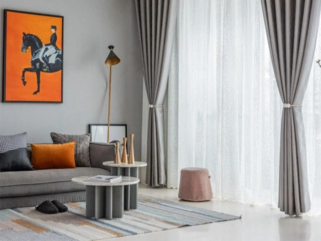

Indicative price range: About ৳250 – ৳1,200 per piece

Curtain price guide · Curtain Canvas blog
Curtain price in Bangladesh: What affects the cost?
If you have searched for the curtain price in Bangladesh, you have probably seen numbers that swing from a few hundred taka to tens of thousands. That is confusing, and it is also normal. A curtain is not a single product. It is a mix of fabric, lining, tailoring, hardware, and service, and each part moves the final bill.
This guide explains exactly what drives curtain cost in Bangladesh, what typical price ranges look like, and how to plan a budget that fits your home without ending up with curtains you regret.
Typical curtain price ranges in Bangladesh
Before we get into the factors, here is a rough picture of what the market looks like. These are indicative ranges gathered from public marketplace listings and price guides, not a quote from Curtain Canvas. Your actual cost depends on the factors below.
Curtain type
Indicative price range: About ৳300 – ৳750 per yard
Indicative price range: About ৳400 – ৳1,500 per piece
Indicative price range: About ৳1,500 – ৳2,500+ per piece
Indicative price range: About ৳1,500 – ৳5,000+ per piece, and higher for full rooms and premium fabrics
What affects the luxury curtain price
Luxury curtain prices are rarely about fabric alone. They reflect the quality of the material, the skill of the tailoring, the lining, the hardware, and the design service behind every panel. The sections below explain why.
1. Fabric type and quality
Fabric is usually the single biggest part of the price, so it is the best place to start. Fabric weight matters too. Heavier fabrics use more yarn and are harder to cut and stitch, which lifts both material and labor costs. Quality also shows up in color fastness, shrinkage, and how well the fabric hangs after a year of use. Cheap fabric that fades in the Dhaka sun is rarely cheap in the long run.
- Sheer and voile: Light, airy, and the most affordable. They filter daylight and add softness, but they offer little privacy on their own.
- Cotton and linen blends: Breathable and easy to live with. Natural fibers cost more than basic synthetics, and pure linen sits at the higher end.
- Blackout fabrics: These are woven densely or backed with a light-blocking layer, so you pay for the extra material and the extra process.
- Velvet, silk, and jacquard: Heavy, rich, and long-lasting. They look luxurious and insulate well, but they cost the most per yard.
2. Window size and fabric quantity
Curtains are priced by the fabric they consume, so bigger windows cost more. A wide balcony door with floor-length drapes can easily use several times the fabric of a small bedroom window. This is why two homes with the same fabric can receive very different quotes. Two details are often overlooked:
- Fullness: Good curtains are not stretched flat. Designers usually use roughly double the width of the window so the fabric folds gracefully. More fullness means more fabric.
- Height: Floor-to-ceiling curtains look more elegant and make rooms feel taller, but they need more length than curtains that stop at the windowsill.
3. Lining and functional layers
Many homes choose a double layer, with a sheer behind a heavier drape. You get daytime softness and nighttime privacy, but you are paying for two sets of fabric and two sets of tailoring. A lining changes how a curtain performs, and it adds cost.
- Blackout lining blocks light for deeper sleep and is popular in bedrooms.
- Thermal lining helps reduce heat gain, which matters during hot summers. See our guide to summer curtains in Bangladesh for ideas.
- UV-protective layers help protect furniture, floors, and artwork from fading.
4. Stitching, heading style, and workmanship
You can often spot a well-made curtain by the hem and the pleats. Neat, even stitching hangs straight and lasts longer, which is a quiet way that workmanship pays for itself. The way a curtain is made changes both its look and its price.
- Eyelet (ring-top) curtains are simple, modern, and generally more budget-friendly.
- Pinch pleat and wave headings need precise measuring, folding, and hand finishing, so they cost more.
- Weighted hems, French seams, and hand-finished edges take skilled labor and give a cleaner, more expensive look.
5. Design, pattern, and embellishment
Plain fabrics are the easiest to work with. Prints, embroidery, borders, and tassels add cost because they need extra material or more careful handling. Large patterns also require matching across panels, which means more waste and more labor. If your budget is tight, a solid color with a textured weave is often the best-looking option for the money.
6. Rods, tracks, and hardware
Heavy fabrics such as velvet also need strong rods and brackets, so the hardware must match the curtain. Hardware is easy to forget until the final quote arrives. Costs depend on:
- The material and finish of the rod (basic metal, brass-look, wood or designer finishes)
- Ceiling-mounted tracks for a cleaner, built-in look
- Brackets, finials, rings, and tie-backs
- Motorized systems, which add a significant premium but offer convenience
7. Ready-made vs. custom-made curtains
Ready-made curtains are the fastest and cheapest route. They come in standard sizes, so you may need to accept slightly short, narrow or wide results. Custom-made curtains are cut to your exact window, fabric, and style, which gives a far better fit and finish. Because someone has to measure, design, cut, and stitch to order, the price is higher. For living rooms, master bedrooms, and premium interiors, custom usually gives the better long-term value. Browse our interior-based curtain collections to see how fabric and style change from room to room.
8. Measuring, installation, and consultation
A wrong measurement can waste an entire fabric order. Professional measuring, advice, and installation add to the cost, but they protect you from expensive mistakes. A good consultation also helps you compare fabrics in your own light, which is hard to judge from a phone screen. If you are in Dhaka or elsewhere in the country, our Bangladesh service area page shows how we support you from the first visit to the final hanging.
9. Brand, sourcing, and market conditions
Where the fabric comes from and who sells it also affects the price. Imported fabrics are influenced by shipping, taxes, and exchange rates. Showrooms with design teams and after-sales care prices in that service. Seasonal demand matters too, since prices and delivery times can shift around Eid and wedding season.
How to plan your curtain budget
A good curtain budget starts with knowing what you need before you compare prices. Measure your windows, set your priorities, and decide where to spend and where to save, so the final quote holds no surprises.
- List your rooms and priorities. Decide where quality matters most, such as the living room or master bedroom.
- Measure your windows, or book a professional measurement, before you compare prices.
- Choose your must-haves. Privacy, blackout, heat control, and style all influence cost differently.
- Ask for a full quote. Make sure it covers fabric, lining, stitching, hardware, and installation so nothing is a surprise.
- Keep a buffer of around ten percent for small changes or extra accessories.
Smart ways to save without looking cheap
Saving on curtains doesn’t mean settling for a dull or flimsy look. With a few smart choices on fabric, headings, and layering, you can keep your windows looking polished while staying within budget.
- Spend more on the rooms guests see, and keep simpler styles for storage or utility rooms.
- Choose plain fabrics with good texture instead of heavily embroidered ones.
- Pick eyelet or simple pleat headings instead of elaborate ones.
- Layer a quality sheer with an affordable second layer where you do not need full blackout.
- Invest in good lining. It protects the fabric and extends its life.
Choose Curtain Canvas for luxury curtains
At Curtain Canvas, luxury curtains are planned around your home, from the first consultation to the final hanging. We guide you through fabric, fit, and finish so every window looks refined and feels right. Why choose us:
- Expert curtain consultancy: Honest advice on fabric, style, and budget before you commit.
- Onsite visit and fabric presentation: We bring catalogs and fabric samples to your home so you can judge them in your own light.
- Trial hanging: See how the curtains look and fall at your window before the final decision.
- Curated collections: Options for every room and season, including summer, rainy season, and winter curtains.
- Service across Bangladesh: Measuring, tailoring, and installation support, with clear quotes and no surprises.
Common questions
Frequently Asked Questions
Ready-made curtains commonly start from a few hundred taka and rise past ৳2,000 for heavier fabrics. Custom curtains for living rooms and bedrooms generally cost more because of fabric quantity, lining, and tailoring.
They use denser fabric or an extra light-blocking layer, and they take more material and effort to produce.
Custom curtains fit your exact windows and style, so they look more polished and last longer. Ready-made curtains suit tight budgets and quick fixes.
It depends on window width, curtain height, and fullness. As a general rule, plan for around double the window width, and get a professional measurement to be sure.
They can. Demand often rises around festivals and weddings, and import costs can shift with market conditions.